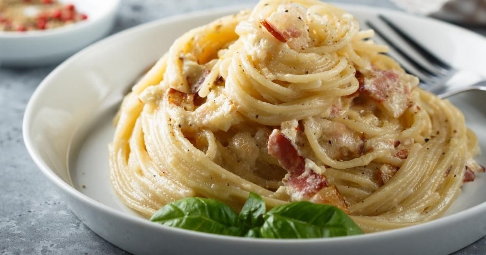

Traditional Carbonara

How to make traditional carbonoara
There is nothing as simple, yet delicious as a hot plate of creamy and savory spaghetti carbonara. This recipe follows the traditional way of making this dish and only uses a very small selection of ingredients. You'll find a full list of ingredients and a step by step guide below.
,
Ingredients (4 Servings)
- 400g spaghetti
- 200g guanciale
- 4 eggs
- 100g grated Pecorino Romano
- ground black pepper
Steps
- First, boil the water for the pasta while you prepare the carbonara sauce. Remember: 1 liter of water for every 100g of pasta and 10g of coarse salt per liter of water.
Then cut the guanciale into small cubes and cook them over small to medium heat for 3-5 mins until crispy.
- Now prepare the pecorino cream. In a bowl put the eggs and the Pecorino Romano cheese. Use the whole egg, not only the egg yolk. Add some freshly ground black pepper and mix until creamy
- The water should be boiling now. Add salt, if not already done, and add the spaghetti. Cook until al dente.
- Transfer the spaghetti from the pot to the pan with the guancale. No need to drain the speghetti, since we want some of that pasta water anyways. Turn heat to medium high to season the pasta with the guancale.
- Turn off the heat and let it cool a bit. Then add the egg cheese sauce and quickly stir. Add either more cheese or pasta water to adjust sauce thickness.
- Place the pasta on a plate and add freshly ground pepper and grated Pecorino Romano to taste.